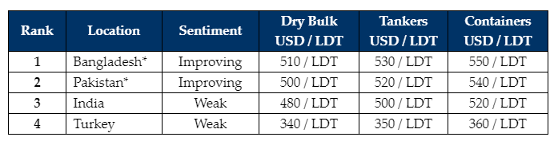

inWeekly Demolition Reports26/02/2024

In spite of Chinese New Year holidays having concluded over a week ago, the ongoing& unending lethargy that is permeating through global ship recycling markets is now being exclusively driven by the relentless & futile shortage of tonnage that is expected to continue until Spring (at the very least), the much-anticipated rebound in global recycling volumes that so many in our industry had been waiting (hoping) for before the turn of the year, has unfortunately failed to materialize.
In fact, as ship recycling markets in both Turkey & India remain well off the competitive pace, Pakistan & Bangladesh remain atop the leaderboard for over a month now, gunning for each other’s lunches amidst this increasingly dwindled out supply of vessels that continue to enjoy the unseasonable boom in freight rates, on the back of unexpected 2024 geopolitical concerns.
Notwithstanding the persisting tonnage-crunch, this recent & gradually pervading positivity in Bangladesh & Pakistan via the easing of financial hurdles & L/C restrictions – that were previously imposed by the respective governments and spanned over 2 quarters towards the end of 2023 (practically shuttering the entire Gadani ship recycling sector) – that were finally eased several weeks ago and it remains unsurprising to witness a rapidly forming demand from both locations. Dejectedly, there is simply not enough going around to satisfy current demand in any market.
Across the ship-recycling landscape in general, elections are due in India next month and with those in Pakistan & Bangladesh having only recently concluded (about 6 weeks ago), much of the ongoing political uncertainty & unrest that dominated the sub-continent ship recycling nations over recent years should hopefully be settled (or at least until the next election cycle), as famished recyclers get back on the prowl for tonnage once again, hopefully seeing bluer skies into Spring (and until the Monsoons resume). In Turkey, economic / fundamental woes remain rampant as the Lira continues to plummet week after week, all while Turkish ship prices cling on for dear life.
Overall, the expected supply of containers for recycling (perhaps the slowest of all sectors) has yet to materialize, all while owners continue to operate their aging box carriers & exploit trade routes currently afflicted by the ongoing Red Sea conflict, and enjoying the trickledown effects of this (overheated?) charter market. Sub-continent recycling prices have also remained stable of late, hovering around the USD 500/LDT mark, as there seems less danger of a surprise slide (or even surge) in levels in the near future, given current fundamentals in each market.
For week 8 of 2024, GMS demo rankings / pricing for the week are as below.

📄 Download PDF: Ship-recycling-market-insight-week-08-2024-Over_Heating.pdfSource: GMS,Inc. ,https://www.gmsinc.net/gms_new/index.php/web